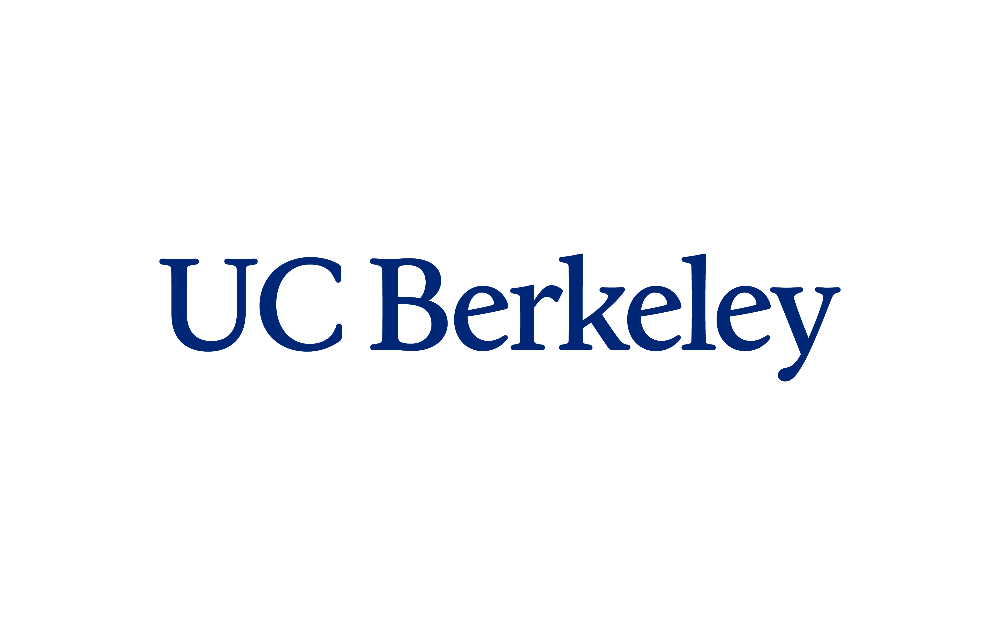
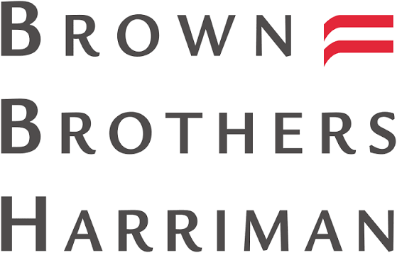
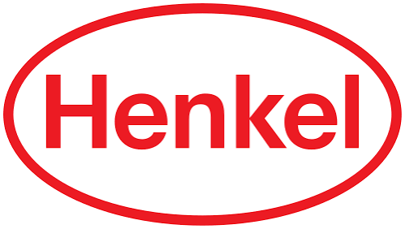
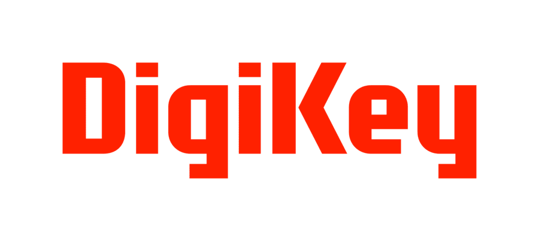
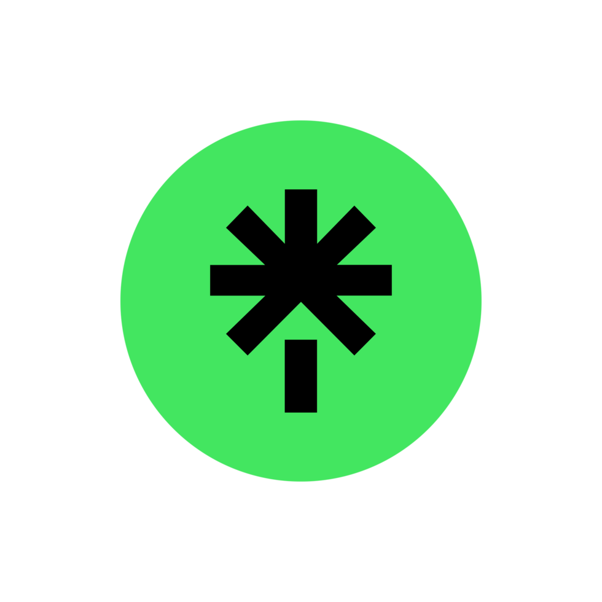
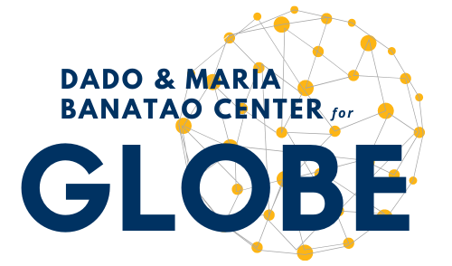

Resume
Experience & involvement
Click any card to see the details. Replace this placeholder content with your actual roles whenever you're ready.
Education
UC Berkeley Bachelor of Arts, Data Science
Organizations and the Economy emphasis — Berkeley, CA
+

Four years at Berkeley studying data science with an Organizations and the Economy emphasis — the mix of technical coursework (data mining, probability, data engineering, data ethics) and organizational theory that basically set up everything I want to do in people analytics.
Trinity College Dublin MSc, Analytics and Artificial Intelligence
Dublin, Ireland
+

Heading back to Dublin for a Master's in Analytics and AI, after spending a semester there on exchange and falling in love with the city. Building on the data science foundation from Berkeley with a deeper, more technical AI focus.
Experience
Brown Brothers Harriman Technical Project Management Intern
Boston, MA
+

What BBH is
Brown Brothers Harriman is one of the oldest private banks in the US. I spent the summer on their Financial Services side, working with a developer-facing toolkit and the Capital Partners team, who handle the operational side of managing client accounts and vendor transactions.
Why it needed me
A 60+ resource developer toolkit used by 300+ developers had no good way to search or surface documentation, so people were constantly re-asking questions that were technically already answered somewhere in there. Separately, Capital Partners was tracking sleeve reporting across 54 accounts with no shared system, and had no real visibility into the $8M+ in daily vendor transactions and invoices flowing through their operations.
What that looked like day to day
I integrated Azure OpenAI APIs into the developer toolkit to add natural language search, so people could actually find documentation instead of guessing keywords or asking around — I presented the solution bank-wide, and it's currently pending deployment. On the Capital Partners side, I built out a Confluence page to standardize sleeve reporting across all 54 accounts, and separately built Excel and Power BI dashboards to make sense of the $8M+ in daily transactions and invoices.
The impact
The Confluence reporting page hit 100% adoption across Capital Partners, and the dashboards gave the team visibility into vendor spend they didn't have before. The AI search tool made it through a bank-wide presentation and is in line to actually ship.
Henkel Product Innovation Consultant
Berkeley, CA
+

What Henkel is
Henkel owns a bunch of household CPG brands, and I worked with their Product Innovation team on making packaging more sustainable across those brand lines.
Why it needed me
Some of their CPG brand lines were still relying heavily on plastic packaging, and no one had actually mapped out which alternative materials were realistic once you factored in real cost tradeoffs.
What that looked like day to day
I benchmarked competitors and ran a cost-benefit analysis across 20+ alternative materials, then designed plastic-free packaging models projected to cut plastic use across the brand lines by 40%. I also led stakeholder meetings with a cross-functional R&D team, translating their materials science data into 18 actual prototypes, and presented the recommendations to company leadership.
The impact
Leadership walked away with a concrete, costed path to a 40% plastic reduction and 18 real prototypes to show for it, not just a proposal.
DigiKey Project Marketing Management Intern
Thief River Falls, MN
+

What DigiKey is
DigiKey is a major electronic components distributor. I spent the summer with their marketing team out in Thief River Falls, MN, working on their Automation & Controls product line.
Why it needed me
Leadership needed a clearer, more digestible read on KPI performance for the product line, and the Q4 industrial sensors campaign needed someone actually coordinating internal marketing and external vendors so it didn't fall apart across teams.
What that looked like day to day
I built interactive Tableau dashboards translating cross-departmental data into something leadership could actually act on, then presented the quarterly business report to 182 employees, including the CEO. I also coordinated the Q4 industrial sensors campaign across internal marketing teams and external vendors, working across MicroStrategy, Google Analytics, Salesforce ADvendio, and Asana.
The impact
The campaign delivered 15% lead generation growth, and leadership got a genuinely clear read on Automation & Controls KPIs going forward.
The Ordinary Project Manager
Berkeley, CA
+

What The Ordinary is
The Ordinary is a skincare brand known for stripped-down, ingredient-focused products. I led a 7-person cross-functional student team as project manager on a real market opportunity for them.
Why it needed me
The brand needed real research to figure out where to take lip care next for a Gen-Z audience, not just a gut call on where the market was headed.
What that looked like day to day
I ran 75 Qualtrics surveys and analyzed 50+ competitor brands, which surfaced a $30–50M lip care market opportunity that ended up guiding the brand's pivot toward Gen-Z customers. I led the 7-member team through Asana with structured check-ins and clear ownership over each piece, and presented prototypes as the research came together.
The impact
The research directly informed the brand's pivot, and the resulting product — a Squalane + Amino Acids Lip Balm — actually launched in July 2024.
Linktree Project Manager
Berkeley, CA
+

What Linktree is
Linktree is the link-in-bio tool most people know from Instagram profiles. I worked as project manager on growth and engagement experiments aimed at college students.
Why it needed me
Account creation among college students was underperforming, and the team needed a data-driven push into new campuses rather than more of the same generic outreach.
What that looked like day to day
I analyzed 800 Qualtrics survey responses in Tableau to revamp the engagement strategy, then ran A/B tests on post formats and timing, tracking CTR and impressions along the way. That work fed into expanding our presence to 10+ schools in just 6 weeks.
The impact
Account creation went up 31% as a result.
Involvement
GLOBE Residential Advisor & Mentor
Berkeley, CA
+

What GLOBE is
GLOBE (Dado and Maria Banatao Center for Global Learning and Outreach, Berkeley Engineering) brings pre-college students to campus for a summer of hands-on engineering — building 3D-printed robots and training ML models — a lot of them away from home for the first time.
Why it needed me
30 students aged 15–17, a technically demanding curriculum, and zero built-in structure for the human side of things. Someone had to actually run the summer, not just the syllabus.
What that looked like day to day
I managed the academic and extracurricular schedule for the whole cohort, planned field trips, and ran interview-prep workshops so students walked away with more than just robotics skills. A lot of the job was translating between "here's the technical curriculum" and 30 kids with wildly different comfort levels with code and hardware — figuring out in real time who needed more structure and who needed more room.
The impact
A full cohort that made it through an intense technical summer intact, plus some professional-development exposure most of them wouldn't have gotten otherwise.
ASUC Community and Student Justice Director
Berkeley, CA
+
What ASUC is
ASUC is Berkeley's student government. I served as Community and Student Justice Director, focused on equity across campus clubs and access to Berkeley itself for local students.
Why it needed me
Recruitment practices across 50+ campus clubs weren't consistently equitable, and underprivileged local high schoolers had no structured path toward applying to Berkeley.
What that looked like day to day
I ran seminars and surveys on equitable recruitment across 50+ clubs, organized and staffed external campus events like outreach fairs and student socials, and built and ran a mentorship program specifically for underprivileged local high schoolers.
The impact
Underrepresented minority participation in clubs increased 25%, and 40% of students in the mentorship program were admitted to Berkeley.
Student Learning Center (SLC) Writing Tutor & Peer Coordinator
Berkeley, CA
+
What the SLC is
The Student Learning Center is Berkeley's campus-wide academic support hub. I work as a Writing Tutor, with a Peer Coordinator role layered on top — details on the coordinator side still need to be filled in here.
Why it needed me
Students across disciplines needed one-on-one academic support they could actually rely on, from someone who could adapt to different backgrounds and learning needs rather than a one-size-fits-all approach.
What that looked like day to day
I provide one-on-one academic support to students across disciplines, building rapport quickly and adapting to each student's background and needs. I also run classroom outreach across campus, introducing students to SLC services and acting as a first point of contact, and support day-to-day operations like scheduling and resource coordination. [Peer Coordinator specifics to add here.]
The impact
[To fill in once Peer Coordinator details are added.]